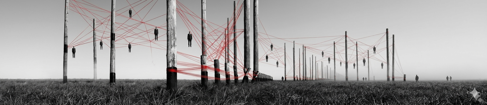
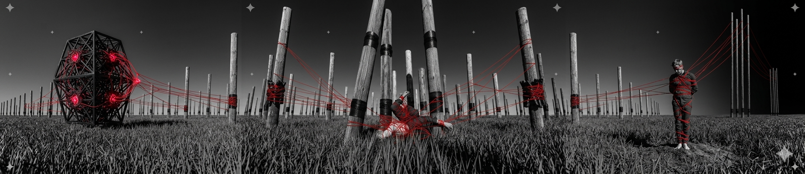
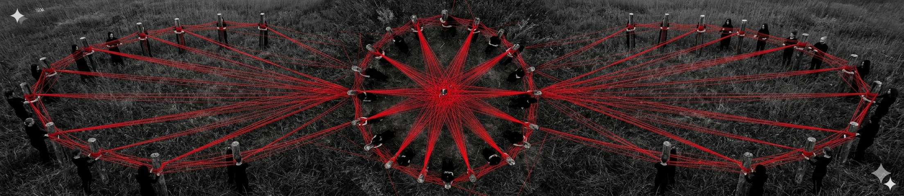
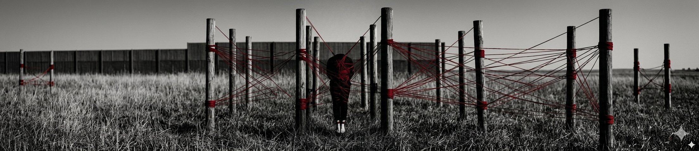
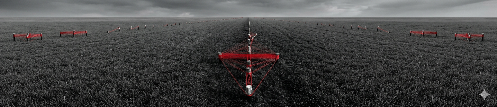
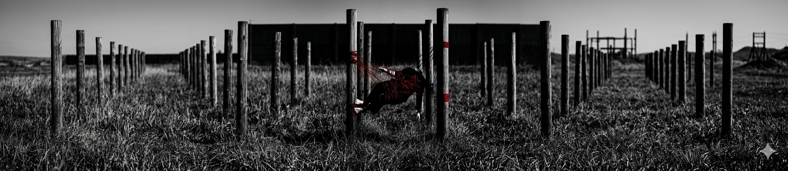

Fragmento_00 / Introducción
MEMORIA
SINTÉTICA
"Cada captura es una cicatriz digital. En este archivo, la imagen no es solo un registro, es el residuo de una emoción capturada entre el ruido y el silencio."

El peso del hormigón sobre el silencio.

Purificación a través del ruido visual.

Conexiones invisibles en un campo de datos.

Donde la materia se convierte en código.

Donde la materia se convierte en código.

Donde la materia se convierte en código.

Donde la materia se convierte en código.

Donde la materia se convierte en código.